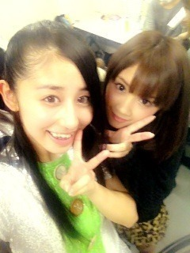
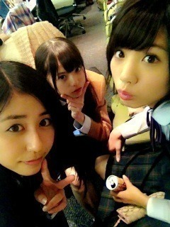

| 2012/12 06 Thu | 仲良しで、賑やかで、大好きで(´>∀<｀)ゝ |
ちはるーむへようこそ◝(●˙꒳˙●)◜
昨日は、せいたんの誕生日‼
おめでとーーーう♡♡

せいたんはね、ほんっとに仲間思いで、心優しくて、温かくて、
なんか優しさを形にしたような女の子だと思う∩^ω^∩
喋った時の見た目とのギャップも可愛くて‼
せいたんに支えられてる部分、いっぱいあるから
いなくてはならない存在と思ってるんだ。みんな。ヽ(；；)丿
ほんとにせいたん大好き大好き！！！！
いつもありがとう♡
素敵な一年にしてね


昨日は久しぶりに色んなメンバーに会えて落ち着けた‼
やっぱりメンバー最高だねー
落ち着くし楽しいしにぎやかだし
メンバーに会わないと寂しくてしんじゃうよーヽ(；；)丿
相当うるさかったよね、うちたち。笑
襟足を切られたひよっこまあや、
安定の能條、
ナチュラルハイのらりん、
見た目は子ども、中身は大人のコナンころちゃん、
外から見守りたがりの強がり飛鳥。
以上‼愉快な仲間たち‼笑
久々にあんな騒いだわ！！！！笑
昨日は
生写真撮影とか、動画撮影とか、サイン書いたりとか、盛りだくさんだったから
皆さん楽しみにしててねー(o^^o)
終わったあとにはあみとあすかと
つまりちーむＮでまたご飯食べてきちゃいました( ^ω^ )
またかよ( ^ω^ )‼笑
～ちーむＮものがたり～
３人でパスタ二皿頼んでみたんだけど
びっくりするくらい本当足りなくて、
びっくりしちゃったから
いちごパフェを頼んだのよ。
そうしたらね、これまた
びっくりするくらい光の速さでみるみるうちになくなってしまったよ。
Bigサイズ頼んだはずだったのに
ものの２分でなくなったよ。
∩^ω^∩
びっくり！！！！
野獣のように食べまくる私たち。
周りからはどんな風に写ってたのかな。
気になるな。
∩^ω^∩
～ちーむＮものがたり・続～

ほらみて‼みんな仲良し‼♡♡
この仲良し、ずーっと壊れないでいたいな♪
そーいえば
昨日気付いたみたいなんだけど
BUMPさんとか、flumpoolさんとか、RADWIMPSさんとか、UVERworldさんとか、清水翔太さんとかの
高めの声の人の歌声が好きみたい‼♪
知らぬ間にそればっかり聞いてた( ^ω^ )
皆さんは声フェチみたいのあるかな⁇

奥に矢印。笑
今日も石掘ってきます。笑
篆刻ね‼篆刻‼てんこく‼
あ、まだ準備かな。
下書きとか、練習とか‼
がんばるんっ
ばいるんっ
るんるんっ
ちはるんっ
(´>∀<｀)ゝ
コメント(93)
2012/12/06 08:00